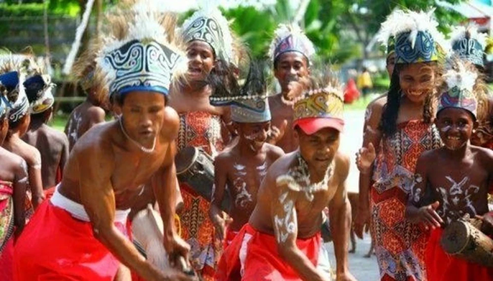
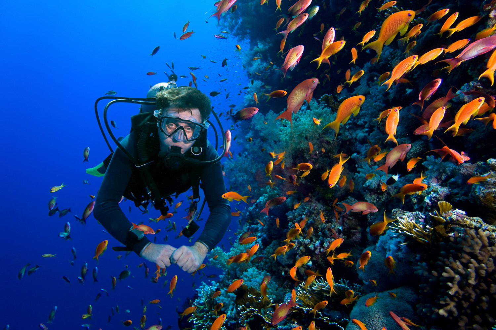

Jelajahi Raja Ampat

Keindahan Alam
Raja Ampat, dengan keindahan alam bawah laut yang tiada duanya, adalah surga bagi para penyelam, dengan terumbu karang yang indah dan keanekaragaman hayati laut yang kaya, serta pulau-pulau eksotis yang memukau seperti Pulau Wayag dan Misool.

Budaya dan Seni
Selain pesona alamnya, Raja Ampat juga menyimpan budaya lokal yang kaya, dengan suku-suku asli seperti suku Biak dan suku Misool yang masih memegang teguh adat istiadat dan tradisi mereka dalam kehidupan sehari-hari.

Aktivitas Wisata
Di Raja Ampat, wisatawan dapat menikmati berbagai aktivitas seru seperti snorkeling dan diving di lokasi-lokasi terkenal seperti Cape Kri dan Blue Magic, atau menjelajahi pulau-pulau kecil yang tenang sambil menikmati pemandangan matahari terbenam yang menakjubkan.